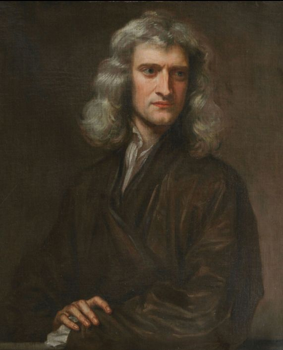

Figure 1:Isaac Newton
Figure 2:Gottfried Wilhelm Leibniz
Differential equations began with Gottfried Wilhelm Leibniz, the Bernoulli brothers and others from the 1680s, not long after Newton’s fluxional equations in the 1670s. Applications were made largely to geometry and mechanics; isoperimetrical problems were exercises in optimisation.
Differential equation first came into existence with the invention of calculus by Newton and Leibniz.